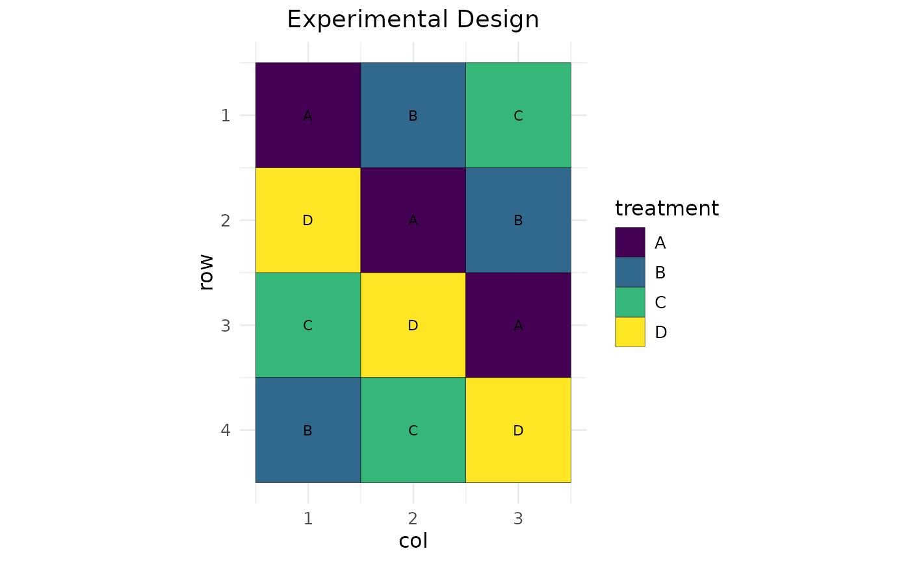

Creates a visual representation of an experimental design layout, with options to highlight blocks and customize the appearance.
Usage
plot_design(
design_result,
treatment_var = NULL,
block_var = NULL,
title = "Experimental Design",
row_var = "row",
col_var = "col"
)Arguments
- design_result
Either the result from speed() function or a design matrix
- treatment_var
The name of the treatment variable (required if design_result is a dataframe)
- block_var
Optional name of the blocking variable to highlight with boundaries
- title
Plot title (default: "Experimental Design")
- row_var
Name of the row coordinate variable (default: "row")
- col_var
Name of the column coordinate variable (default: "col")
Examples
# Create a simple design
df <- data.frame(
row = rep(1:4, each = 3),
col = rep(1:3, times = 4),
treatment = rep(LETTERS[1:4], 3)
)
# Optimize the design
result <- speed(df, "treatment")
#> Iteration: 1000 Score: 2.333333 Best: 2.333333 Since Improvement: 385
#> Iteration: 2000 Score: 2.333333 Best: 2.333333 Since Improvement: 1385
#> Early stopping at iteration 2615
# Plot the optimized design
plot_design(result)

# Plot with custom treatment variable name
plot_design(result$design_df, treatment_var = "treatment")